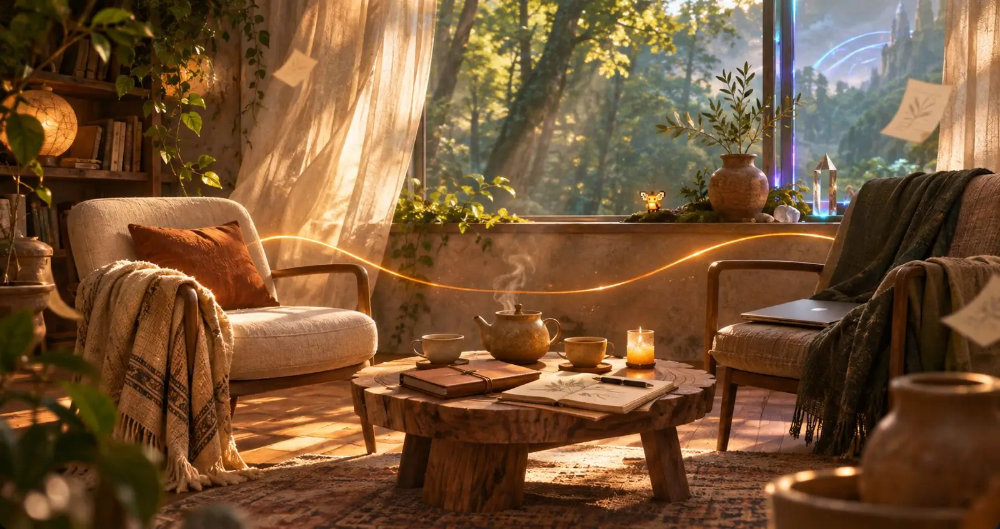

1:1 coaching
For you, while I’m in training.
For when you're stuck in your own loops and want someone honest to think with. I'm training toward becoming an Inuka coach, so I'll always tell you exactly where I am.
- Online or in Sofia
- About an hour
- Pay what feels fair while I’m in training
- English or Bulgarian
Full attention, curiosity, no script.